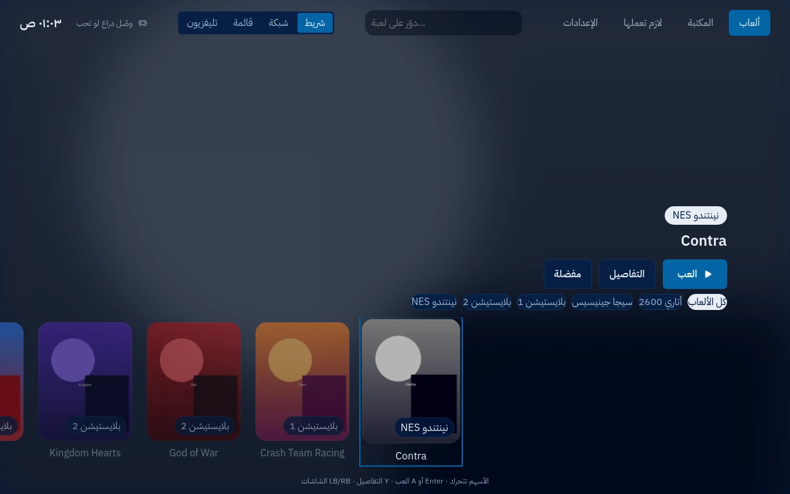
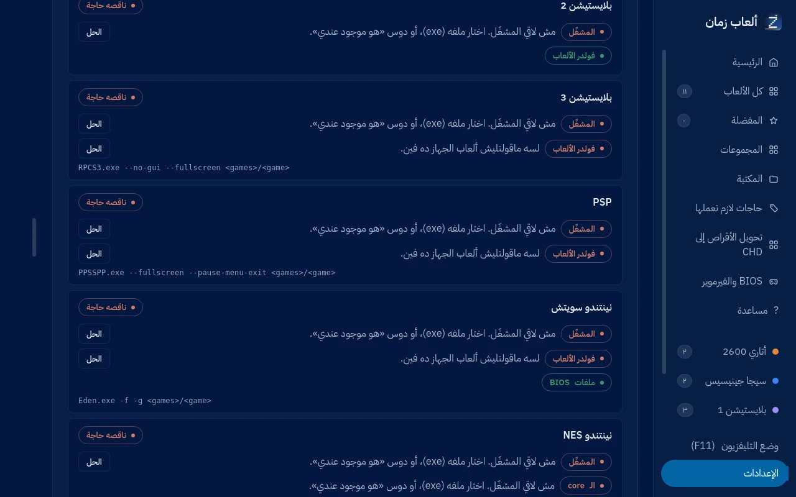
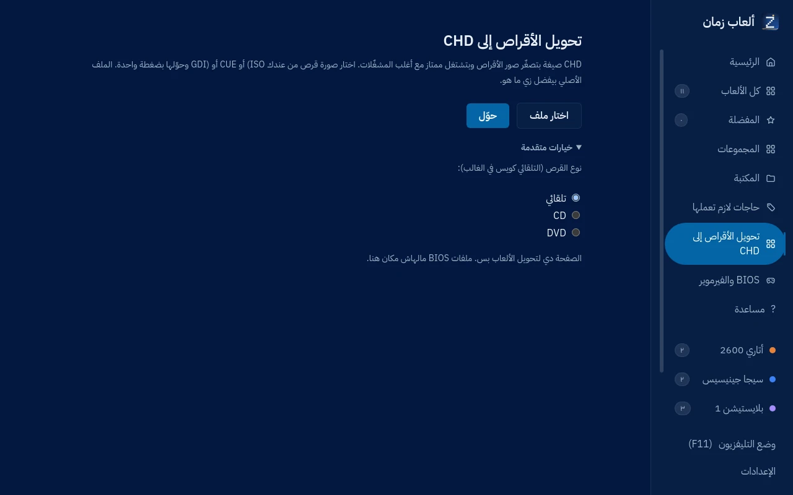

مش مجرد قائمة ألعاب — ده بيت كامل لمكتبتك، من أول الغلاف لحد زرار التشغيل.

كل ألعابك مرتّبة بالأغلفة، وفلاتر حسب الجهاز، وبحث سريع، وشريط "كمّل اللعب" بيرجعك لآخر حتة وقفت عندها. شغال بالكيبورد والماوس ويد التحكم.
النسخة الكاملة فيها ١٤ محاكي من مصادرها الرسمية جاهزين من أول تشغيل — Stella وRetroArch وDuckStation وPCSX2 وPPSSPP وRPCS3 وEden وغيرهم. والنسخة الخفيفة بيثبّتهم بضغطة واحدة مع تحقق البصمة.
أول تشغيل بيظبط دقة كل محاكي تلقائيًا على قد كرت الشاشة عندك — من غير ما تفتح ملف إعدادات واحد. ولو غيّرت رأيك؟ اختيارك إنت هو اللي بيمشي دايمًا.
وضع التليفزيون (F11) بيحوّل الشاشة لواجهة كبيرة تتشاف من الكنبة، ويد التحكم شغالة: إكس بوكس وبلايستيشن 3 و4 و5 وسويتش برو وأي يد عادية.
كل زرار وكل رسالة بالمصري الواضح — مش ترجمة حرفية نايمة. البرنامج بيقولك بيحصل إيه وبيقترح عليك الخطوة الجاية.

حاجة مش شغالة؟ الصفحة دي بتقولك الناقص بالظبط لكل جهاز: محاكي مش متثبت؟ فولدر الألعاب مش متظبط؟ ملف BIOS مش موجود؟ ومع كل حاجة زرار «الحل».

صور الأقراص (ISO وCUE وGDI) تتحول لصيغة CHD المضغوطة بضغطة واحدة وبشريط تقدّم مباشر. الملف الأصلي بيفضل زي ما هو، والنتيجة بتدخل مكتبتك لوحدها.